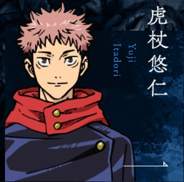
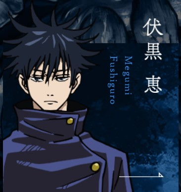
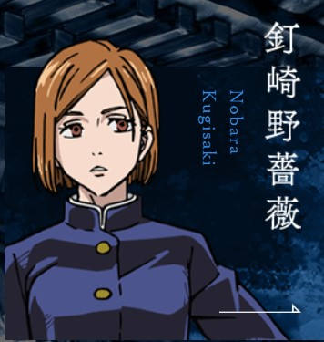
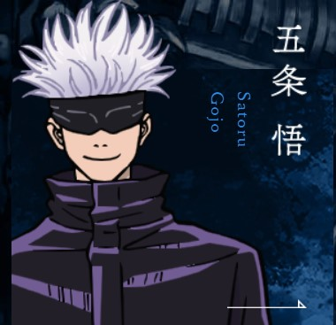

角色介紹




故事大綱
2018年6月，高中生虎杖悠仁的祖父在逝世前囑託他要盡可能幫助他人，並希望他能在眾人簇擁下死去。虎杖悠仁遇見來學校尋找特級咒物的伏黑惠，他為了解救因咒物而身陷危機的學長姊，吞下詛咒的手指，讓「宿儺」這種詛咒跟自己合而為一。他得知只有自己能對付宿儺後，認為這是自己的使命，便加入東京咒術高專，成為最強咒術師五條悟的學生，並和伏黑惠、釘崎野薔薇成為同學。
宿儺不斷地想支配虎杖的肉體。在對抗某個特級咒靈時，虎杖為了擊敗它而讓宿儺控制了自己的身體。雖然宿儺輕易地取勝，但也將虎杖殺死。在宿儺和虎杖締下誓約後，他便將虎杖復活。虎杖接受訓練後，跟隨咒術師七海參與實戰。他們擊退了由對人類的負面情緒產生的咒靈「真人」。真人決定與詛咒師夏油一派合作，共創一個只有詛咒、沒有人類的世界。為了達此目的，他們必須抑制五條悟，並集齊宿儺的二十根手指，讓宿儺取回完整的力量。
OP&精華